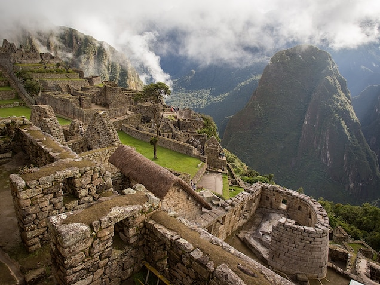
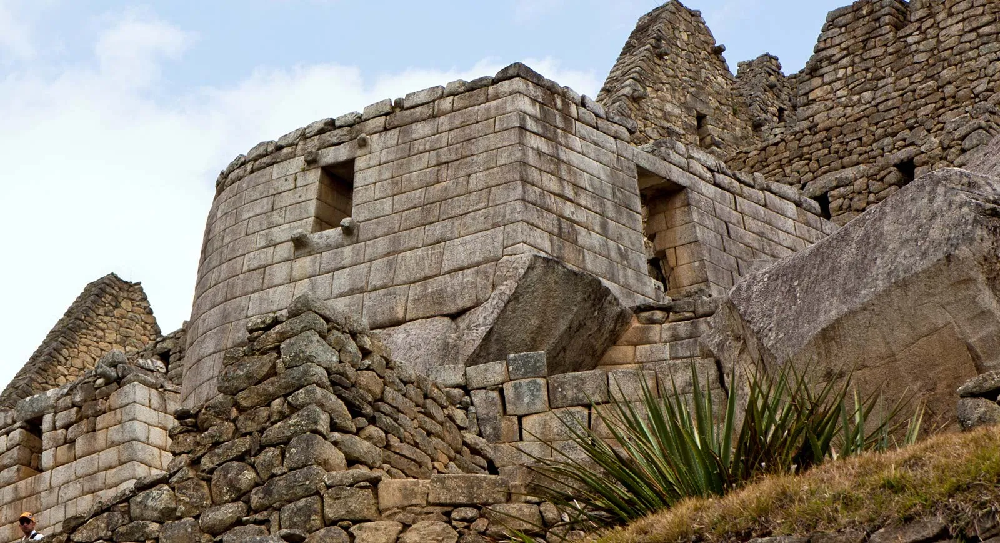
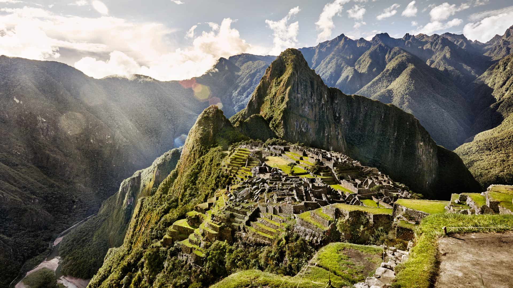

Machu Picchu is a 15th-century Inca citadel located in the Cusco Region of Peru. The site is situated on a mountain ridge above the Urubamba Valley and is often referred to as the "Lost City of the Incas." It is considered one of the most important archaeological sites in South America and is a UNESCO World Heritage Site.
Machu Picchu is a complex of stone structures built by the Inca Empire in the 15th century. The site covers an area of about 32,000 square meters and includes temples, palaces, and residential areas. The main structures at Machu Picchu include the Temple of the Sun, the Temple of the Three Windows, and the Intihuatana stone.
Machu Picchu was built by the Inca Empire in the 15th century, but the exact purpose of the site remains a mystery. Some theories suggest that it was a sacred religious site, while others believe it was a royal estate or a military fortress. The site was abandoned by the Incas during the Spanish conquest and remained hidden for centuries until it was rediscovered in 1911 by Hiram Bingham.
Machu Picchu is made up of more than 150 structures, including temples, palaces, and residential areas. The structures were built using a technique known as "ashlar," which involved shaping large stone blocks to fit together perfectly without the use of mortar. The Incas also used a method of terracing to create flat areas for the buildings and to prevent erosion.
